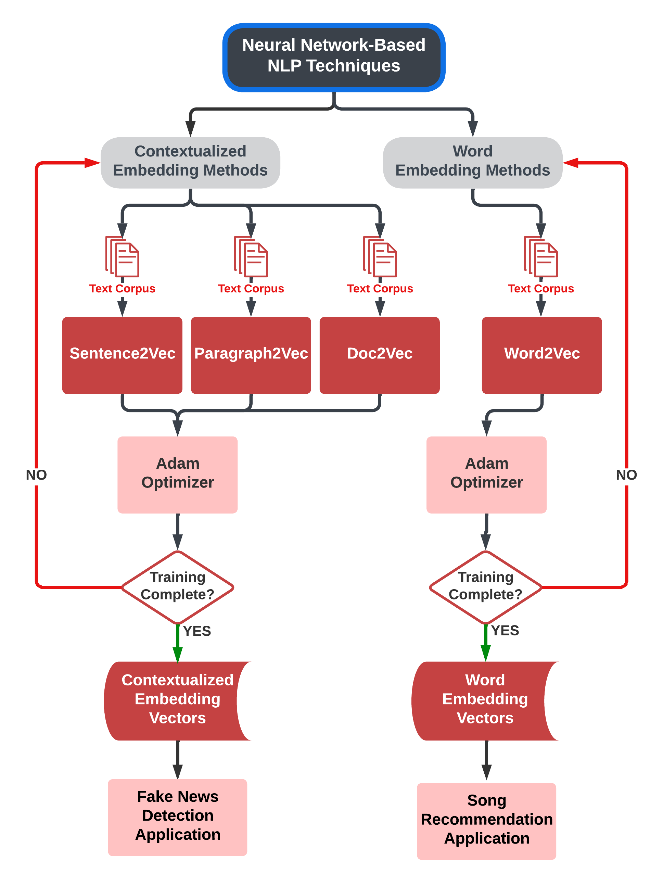

VisNLP 2.0 | A Visual-Based Educational Support Platform for Teaching and Learning Neural Network-Based NLP
Analytics
We propose a web-based visual platform that facilitates learning and teaching of neural network-based natural
language processing (NLP) analytical methods. Our aim is threefold:
(1) To present several popular neural network-based NLP methods in a
step-by-step linear format that is easy to comprehend.
(2) To address the 'black box' problem present in neural network-based
NLP learning resources through continuous real-data examples.
(3) To enable users to interpret model outputs through interactive
visual demos that apply neural network-based NLP model outputs.

Project Background: Natural Language Processing (NLP) is a field of study that focuses on enabling computers to understand,
interpret, and generate human language. It's the technology behind chatbots, virtual assistants, and even
voice-controlled devices like Siri and Alexa. NLP can also be used to perform tasks such as sentiment analysis,
text summarization, and language translation. With NLP, computers are able to process and analyze vast amounts
of text data, provide insights and automate various language-related tasks.
Project Credits
Developed By: Jack Gomes, Daniel Johnson, Garrett McMerriman, John
Prominski, Henry Yoder